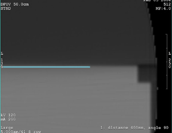
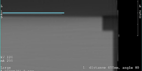

Illustration 6: Example of line below

Illustration 4: Phantom zoomed and shifted

The figures below show examples of the line ending up above and below the phantom. The other end of the line was the end manually placed touching the top edge of the phantom. These examples indicate a condition that requires a measurement and subsequent offset correction to be applied to the gantry to straighten the image.
Illustration 5: Example of line above

Illustration 6: Example of line below